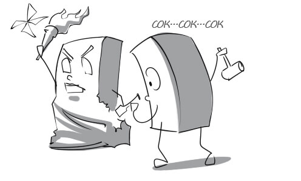
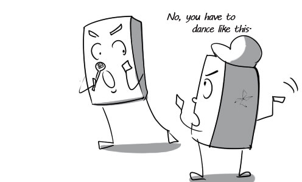
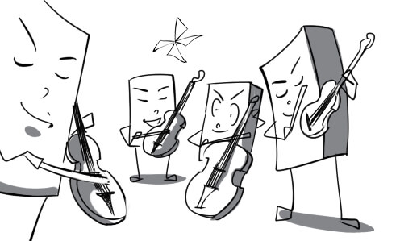
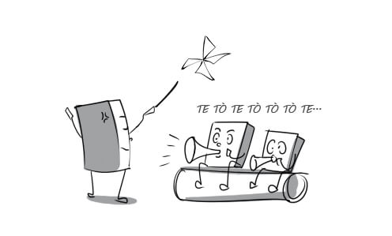
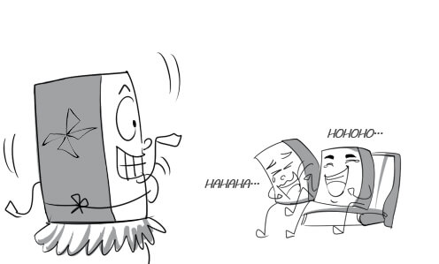
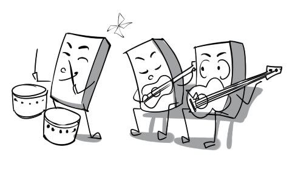
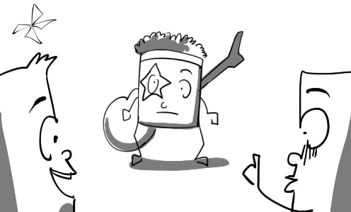
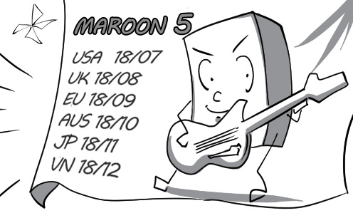

1.
abstract: Many people find it hard to understand abstract paintings.

2.
accomplished: He is one of the most accomplished singers of our time. He can sing and play guitar expertly.
3.
actor: The actors rehearse once again before the play starts.

4.
adaptation: This play is an adaptation of the famous novel Harry Potter.

5.
aesthetics: The professor of aesthetics is giving a lecture on the beauty of Vietnamese women.

6.
appreciation: The manager presents a small amount of money to Peter in appreciation of his work.

7.
artefact: The ancient artefact was sold at record high prices at yesterday's auction.

8.
artist: The rising artist is admired by many people for his real talent.
9.
atmosphere: There was a lively and exciting atmosphere at the concert of Linkin Park.

10.
audience: Some audience found the play very touching while the others didn't.

11.
audition: Mary had an audition for a part in the Broadway musical.
12.
ballad: David sang a love ballad to his girlfriend on her birthday.
13.
ballerina: The ballerina is performing one of the most famous ballets "Swan Lake".
14.
ballet: My girlfriend has been practicing ballet since she was a little girl.

15.
burgeon: Vietnam's burgeoning hip-hop community have gained strong followings among young people.

16.
carving: This art student majors in wood and stone carving.

17.
choreograph: Mr Walls is choreographing a dance routine for the famous singer.

18.
chorus: The chorus is performing a Christmas carol.
19.
classical: The classical music band is performing a melodious concerto of Beethoven.

20.
complementary: The guitar is complementary to the singer's voice. Together they make the song sound very beautiful.

21.
compose: The musician composed this beautiful song in just one night.

22.
conception: In the traditional conception of Vietnamese people, young people's marriages are decided by their parents.

23.
concert: Peter is in charge of conducting the children's concert.

24.
copyright: I am the one who own the copyright on this song.

25.
costume: Peter went to the Halloween party in a vampire costume.
26.
craft: The traditional craft of this village is bamboo hat weaving.

27.
creation: This painting is the last creation of Van Gogh.
28.
specialize: This natural history museum specializes in dinosaurs.
29.
depict: He used body language to depict the shape of Vietnam.
30.
design: My aunt designed and made this beautiful dress for me.

31.
distracting: The film crew found the noisy crowd very distracting.
32.
dramatic: Peter is studying at the national institute of dramatic arts.

33.
eclectic: His costume is an eclectic mixture of the antique and the modern.

34.
electric: The atmosphere became more and more electric, which made the MC a little scared.

35.
emotion: Mary lost control of her emotions at the sad ending of the movie.

36.
emphasize: The rain scene emphasizes the sorrowful situation the main characters are in.
37.
enrich: David reads a lot of books to enrich his knowledge of the character.

38.
epic: Odyssey is one of the greatest Greek epics.

39.
escape: The prisoner tried his best to escape but failed.
40.
exhibition: My father took me to the exhibition of sculpture today.

41.
expression: You can find the expression of the singer's sorrow in his songs.
42.
farce: The farce made the audience laugh to tears.

43.
festival: I bought a lot of discounted DVDs at the Cannes Film Festival.

44.
fundamental: You must have fundamental knowledge of facial features in order to paint a portrait.

45.
gallery: The young painter will have a small exhibition at the gallery.
46.
image: Prehistoric men decorated their cave walls with images of wild animals.

47.
impersonate: She does a very good job of impersonating Marilyn Monroe.

48.
element: A good appearance is an essential element of an actress.
49.
improvise: The actor had to improvise because he forgot his lines.

50.
influence: This violent 3D film negatively influenced many teenagers.

51.
inspiration: Women's beauty is a rich source of inspiration for this painter.

52.
interactive: In interactive theatre, performance often involves the audience in active roles.
53.
intimacy: I really like this coffee shop because it has a sense of intimacy about it.
54.
landscape: The painter is painting a landscape in oils on canvas.

55.
leading: Anna wants to play the leading role in the new movie although she is very ugly.

56.
literature: War and Peace is one of the greatest works of literature in the world.

57.
live: This pub is a great place to listen to live music in this city.

58.
lyric: Mary is trying to learn this song's lyric by heart.

59.
magical: We spent a magical weekend in the countryside.
60.
masterpiece: The Statue of Liberty is a masterpiece of the French sculptor Frédéric Bartholdi.
61.
metaphor: The ocean is used as a metaphor to describe the vast amount of knowledge.

62.
monologue: The audience is bored with the long monologue of the actor.

63.
mood: David's painting has a very sorrowful mood because it was painted when he was very poor.
64.
musical: The actors in this musical are very good at acting as well as singing.
65.
musician: The musician is singing and playing the piano at the same time.

66.
opera: Opera singers can sing very loudly without using microphones.

67.
orchestra: Peter plays the acoustic guitar in the school orchestra.

68.
painting: Jimmy is so enthusiastic about painting that he paints on anything he wants.
69.
pantomime: Pantomime requires actors to tell a story without using words.
70.
participate: The teacher encourages the boy to participate in the play.

71.
passionate: My brother is so passionate about Japanese that he always dresses like a samurai.
72.
performance: The circus performance was so wonderful that the audience couldn't stop applauding.

73.
plagiarism: The professor accused Peter of plagiarism and asked him to write a new essay.

74.
play: The play is so interesting that everyone pays full attention to it.
75.
playwright: It took the playwright almost 6 years to write this play.

76.
poetry: Poetry is Peter's biggest passion. He always write love poems for his girlfriend.

77.
popular: The singer became very popular after winning a Grammy award.
78.
portrait: The portrait is so lively that I feel like I'm looking at a real person.

79.
prominent: The bandmaster plays a prominent part in the concert.
80.
provoke: The new novel is sad enough to provoke our tears.

81.
reflection: Art has always been a reflection of the culture of a contemporary society.

82.
relaxing: I spent a relaxing evening with my best friend yesterday.

83.
response: The terrible performance provokes an angry response from the audience.
84.
rhythm: I like music with a fast rhythm. It makes me want to dance.
85.
sculpture: After 10 years of training, David masters the techniques of sculpture in stone.
86.
stimulating: The University of Fine Art offers their students a stimulating educational visit once a month.
87.
style: These two singers have totally disparate music styles.

88.
surreal: The movie was a surreal mix of fact and fantasy.

89.
taste: Everyone is shocked by his bizarre taste in music.

90.
theatre: My sister and I practice the threatre at our school every Sunday.
91.
theme: Food and nutrition is the theme of our discussion today.
92.
transcend: The message of this movie is that love transcends age differences.

93.
venue: The band chose the USA as the first venue on their world tour.

94.
visual: This movie is very famous for its remarkable visual effects.
95.
vivid: The plastic lizard looks so vivid that it scares the girl to death.

96.
vogue: Leopard print has come into vogue recently. Many celebrities love this style.